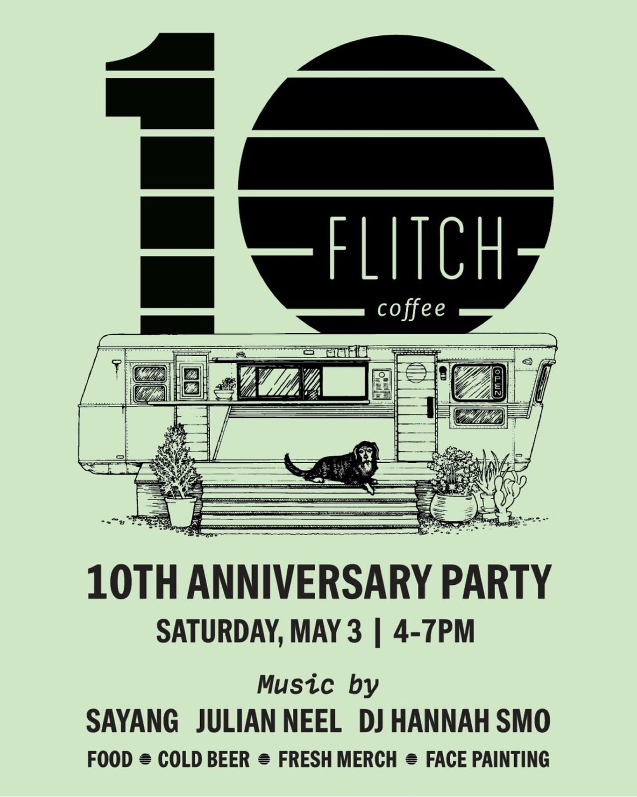

Home / Our story
A 1952 Spartan trailer on Tillery Street
Flitch Coffee is a specialty coffee shop operating out of a remodeled 1952 Spartan trailer in East Austin. Ten-plus years in, we’re still building it little by little, with a lot of help from our neighbors.

the trailer
Mid-century aluminum, fresh espresso
Our home base is a silver 1952 Spartan, rebuilt into a coffee bar with a wooden porch, a red door and an order window facing the patio. Around it grew everything else: the covered patio, the long tables, the plants, a little stage for music and markets.
We work with local and national roasters to bring a variety of coffees to the menu, and we collaborate with local bakers, makers, vendors and farms for everything else.

the name
What is a flitch?
A flitch is a slab of wood cut from a log. We share our lot with Harvest Lumber Company, a sawmill and lumber warehouse, so the name (and the sliced-log logo) pretty much picked itself.
who we pour
Partners we love
Local first, with a few favorites from further afield.
a few milestones
Ten-plus years of Flitch
- 1952A Spartan trailer rolls off the line. Decades later it becomes our coffee bar.
- 2015Flitch opens on Tillery Street.
- 2025Our 10th anniversary party: music, face painting, cold beer and a lot of thank-yous.
- TodayMakers markets, holiday fundraisers (we matched your ornament donations 100% for Casa Marianela), and Pawdust, cancer-free.

Come say hi to the crew.
Open every day, 7am–3pm.